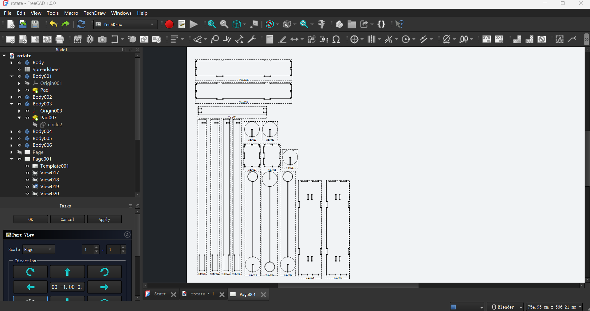

Introduction
Vinyl Cutting: Employ a sharp blade to cut thin materials like PVC vinyl, commonly used for creating stickers, signs, and wall decals (ideal for 2D design but limited for soft material and complex 3D cuts.)
Waterjet Cutting: Use high-pressure water(sometimes mix with abrasives) to cut through materials like metals, stones, ceramics and glass, it is slower than laser cutting but can handle different thickness of materials.
Laser Cutting: Uses a high-powered laser beam to melt or vaporize material, achieving precise cuts. Laser cutting is suitable for metals, plastics, wood, and paper. However, it may not be ideal for very thick materials and can be limited by the material's reflectivity.
Laser Waist: This refers to the point where the laser beam is at its narrowest, resulting in the highest energy density.
Laser Focus: This is the process of adjusting the laser beam to focus on the material's surface, ensuring optimal cutting performance.
Kerf: The width of the cut made by the laser beam. Understanding kerf is crucial for precise design adjustments, as it affects the final dimensions of the cut piece.
These terms are important because they influence the cutting quality and precision. Properly managing the laser waist and focus ensures efficient energy use and optimal cut quality. Accounting for kerf is essential in design to achieve accurate final dimensions.
Project
I use laser cutting to design a Newton's Cradle.
At first, I model 7 parts in freeCAD. (padding every sketch to 3D) Try to see the parts I'm going to assemble in a more concret way, avoid set the wrong parameter leading to assembly issues. First, I use the sketch tool to draw the outline of each part, ensuring that the sockets and protrusions of the parts fit with other parts. Then, by using the mating relationships and dimensional constraints of the parts, I ensure the tightness and range of motion between the parts.
The sketches of each part use detailed dimensional constraints and fit parameters to ensure they can be accurately inserted and connected. To simplify subsequent modifications, I created a spreadsheet that contains all the key dimensions, such as material thickness. This way, I can easily change parameters, like altering the material thickness, and all related part dimensions will automatically update.

During the laser cutting stage, I use the TechDraw workbench in FreeCAD to generate blueprints and export them in SVG format to fit the laser cutter. I ensure that each cut is precise to avoid any errors.
Make sure every step of the laser cutting is done well, then wait it finished.
After it was finished, I just assemble it, becaurse the material thinckness is 2mm, some part of it is unable to maintain a stable mutual insertion state, so I use glue to secure the model. Also, the kerf seems didn't work, I need to use much force to make my internal cutting parts insert each other.
The box of the model wasn't assembled very well because when I set the dimensions, I relied solely on imagination. As a result, the side panels of the box were difficult to fit in due to missing the dimensions of other parts, such as the side and front panels. Later, I need to first build it in FreeCAD's Part Design mode or use Boolean operations to directly create the recessed and protruding shapes, so the box can close perfectly.
Here is the freeCAD file of the project I mentioned.